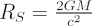

The Schwarzschild radius is the radius of the event horizon surrounding a non-rotating black hole. Any object with a physical radius smaller than its Schwarzschild radius will be a black hole. This quantity was first derived by Karl Schwarzschild in 1916:

where RS is the Schwarzschild radius, G is the gravitational constant, M is the mass of the object and c is the speed of light.
The following table gives the Schwarzschild radii of some familiar astronomical objects:
| Object | Mass | RS | |
|---|---|---|---|
| Sun | 2.0 × 1030 kg | 3.0 × 103 m | = 3 km |
| Earth | 6.0 × 1024 kg | 8.7 × 10-3 m | = 8.7 mm |
| Moon | 7.3 × 1022 kg | 1.1 × 10-4 m | = 0.11 mm |
| Jupiter | 1.9 × 1027 kg | 2.2 m | = 2.2 m |
| Neutron Star | 2.8 × 1030 kg | 4.2 × 103 m | = 4.2 km |